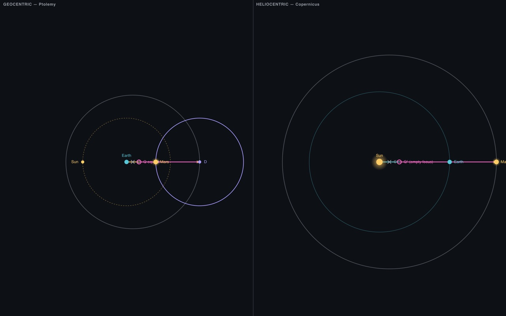
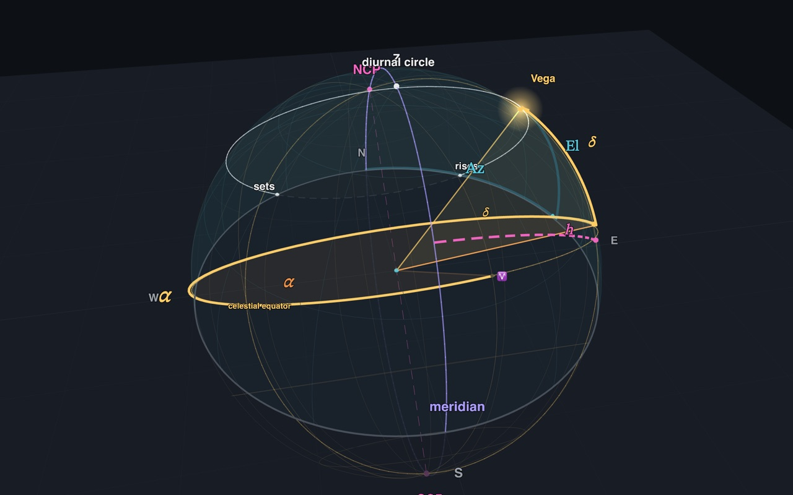
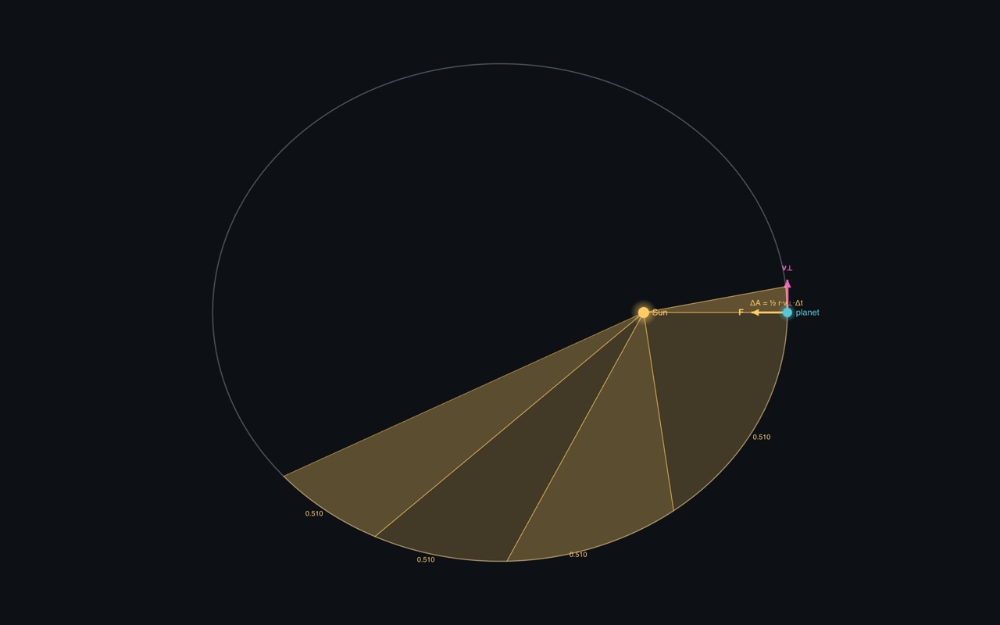
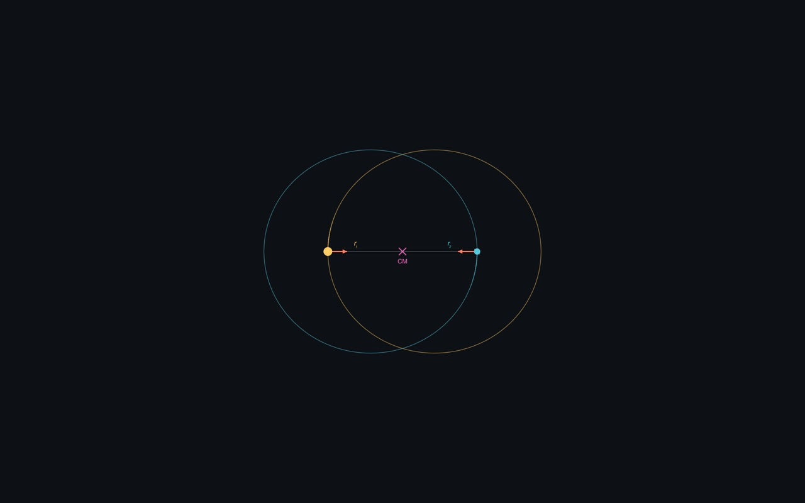
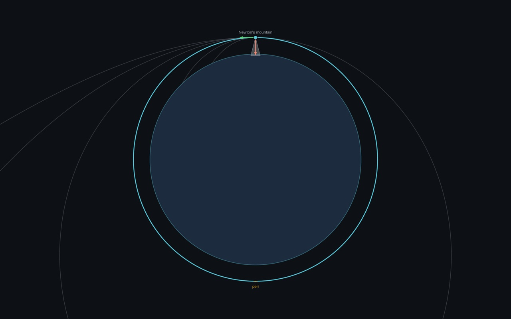
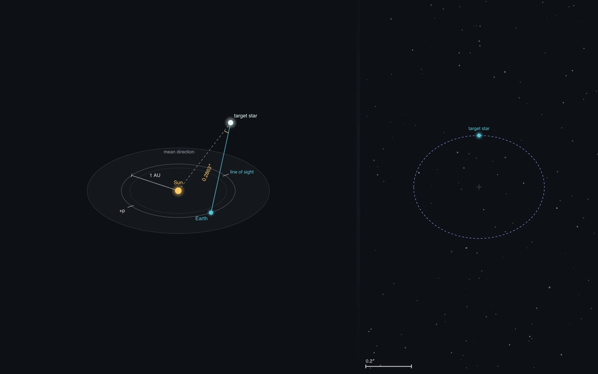

Interactive Astronomy Visualizations
A growing set of interactive pages built for NJIT PHYS 320 (Fall 2026) to accompany lecture material on the history and mechanics of astronomical models. Each visualization opens as a standalone page that runs in any modern browser — no installation required, and every page works fully offline once loaded.

The three devices of Greek geocentric astronomy — eccentric, epicycle, and equant — with presets for all five classical planets, Mercury through Saturn. Includes a side-by-side comparison showing why the geocentric and heliocentric models predict exactly the same apparent motion, and a sky-atlas view of the retrograde loops.

Where the vernal equinox ♈ comes from, then horizontal (azimuth, elevation) versus equatorial (right ascension, declination) coordinates on one rotatable celestial sphere — latitude, sidereal time, diurnal motion, and the astronomical triangle that converts between them.

The three laws of planetary motion — the ellipse with the Sun at a focus, equal areas in equal times, and the harmonic law — animated for the real planets, with Ptolemy's equant laid over Kepler's ellipse to show why it worked.

Both bodies move. Center of mass, the CM reference frame, and the reduced mass — from a Sun–planet pair to an equal-mass binary — with the lab-frame trochoids, the barycenter drawn to scale against the primary, and the equivalent one-body orbit running side by side.

From the falling apple to orbit: one launch speed carries a projectile from a falling arc to a circle, an ellipse, a parabola, and a hyperbola, with kinetic, potential, and total energy tracked live. Includes Newton's falling-Moon test of the inverse-square law and the vis-viva equation for the planets and Halley's comet.

Stellar parallax as the first rung of the distance ladder: Earth's orbit, the parallactic ellipse a nearby star traces on the sky, the parsec, and a true-scale view that shows why Tycho saw nothing. Then the magnitude scale, absolute magnitude, and the distance modulus with extinction.